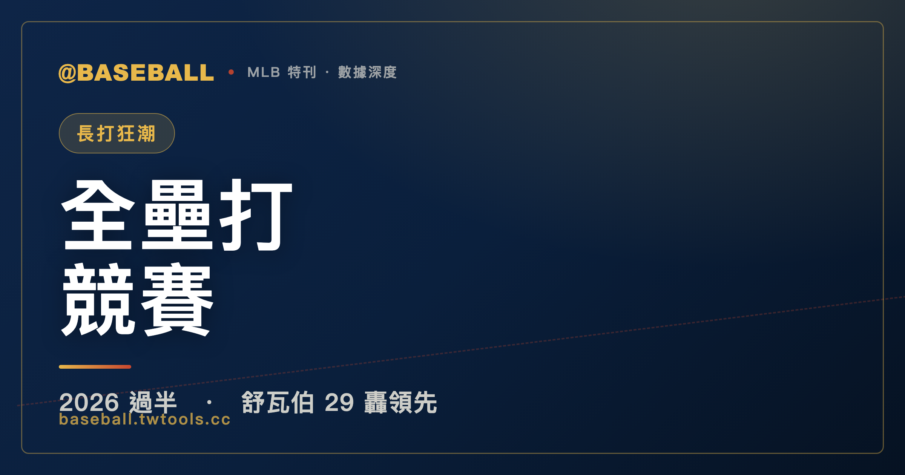

長打狂潮：2026 大聯盟全壘打競賽賽季過半檢視
截至 2026 年 6 月 25 日，費城費城人的凱爾・舒瓦伯（Kyle Schwarber）以 29 支全壘打坐穩大聯盟全壘打榜首，比並列第二的喬丹・阿爾瓦雷斯（Yordan Alvarez）與拜倫・巴克斯頓（Byron Buxton）各多出 4 發。但榜單背後的故事更複雜：舒瓦伯轟數領先，長打率（SLG）與整體攻擊指數（OPS）卻在阿爾瓦雷斯面前俯首稱臣；阿爾瓦雷斯的 OPS 1.069 是全大聯盟前段榜單唯一突破 1.0 的打者。賽季還有大半要走，第一名不等於最終故事。這篇用五張資料表，把 2026 賽季過半的全壘打競賽與長打火力格局，逐格拆開。

MLB 特刊｜2026 全壘打競賽
六月，大聯盟走到了一個微妙的分水嶺。
一百六十幾場的球季大約打到一半，這個時間點的榜單還沒到「蓋棺論定」的程度，但已經夠長、夠具代表性，讓你可以說：哪些打者今年真的在打，哪些只是開季一陣子的熱身火花。賽季過半是一個值得停下來看一眼的節點——不是因為它能預測終局，而是因為它有足夠的樣本量，讓趨勢變得清晰。
截至 2026 年 6 月 25 日，費城費城人（Philadelphia Phillies）的凱爾・舒瓦伯（Kyle Schwarber）頂著 29 支全壘打坐在榜首，後面跟著一票距離不算遠的追兵——休士頓太空人（Houston Astros）的喬丹・阿爾瓦雷斯（Yordan Alvarez）與明尼蘇達雙城（Minnesota Twins）的拜倫・巴克斯頓（Byron Buxton）並列第二，各打了 25 轟；紐約洋基（New York Yankees）新人班・萊斯（Ben Rice）22 轟排第四，比第一名少 7 發。第五名之後是一票 20 轟以上的打者擠在一起，競爭相當密集。
從數字表面看，競爭態勢確實存在。但把完整的打擊成績攤開，競爭者之間的差異，遠比全壘打數的差距更加複雜，也更有意思。
有人全壘打數字漂亮，接觸率卻讓人皺眉；有人被其他打者蓋過了鋒頭，但打擊三圍卻無可挑剔。有人帶著新人光環突然殺出，也有人悄悄出現在好幾張排行榜的頂端，卻沒有引起足夠的討論。這篇文章的工作，就是把這些數字一層一層翻開，讓它們自己說話。
所有數字停在 2026 年 6 月 25 日，賽季進行中，一切都還沒有定論。這是一個過半的快照，不是終局判決。
一、全壘打榜：舒瓦伯的 29 轟，後面緊跟著一票追兵
截至 6 月 25 日的 2026 大聯盟全壘打榜，完整列出如下。
| 排名 | 球員 | 球隊 | HR |
|---|---|---|---|
| 1 | 凱爾・舒瓦伯 Kyle Schwarber | 費城人 | 29 |
| 2 | 喬丹・阿爾瓦雷斯 Yordan Alvarez | 太空人 | 25 |
| 2 | 拜倫・巴克斯頓 Byron Buxton | 雙城 | 25 |
| 4 | 班・萊斯 Ben Rice | 洋基 | 22 |
| 5 | 亨特・古德曼 Hunter Goodman | 落磯 | 21 |
| 6 | 科爾森・蒙哥馬利 Colson Montgomery | 白襪 | 20 |
| 6 | 村上宗隆 Munetaka Murakami | 白襪 | 20 |
| 6 | 麥特・歐爾森 Matt Olson | 勇士 | 20 |
| 6 | 詹姆斯・伍德 James Wood | 國民 | 20 |
| 10 | 尼克・科茲 Nick Kurtz | 運動家 | 19 |
| 10 | 謝亞・蘭格里爾斯 Shea Langeliers | 運動家 | 19 |
| 12 | 彼特・阿隆索 Pete Alonso | 金鶯 | 18 |
| 12 | 迪倫・丁格勒 Dillon Dingler | 老虎 | 18 |
| 12 | 布蘭登・洛 Brandon Lowe | 海盜 | 18 |
| 12 | 克里斯汀・沃克 Christian Walker | 太空人 | 18 |
| 12 | 喬丹・沃克 Jordan Walker | 紅雀 | 18 |
幾件事值得說清楚，因為這張表的資訊量，比只看排名數字要豐富許多。
第一，舒瓦伯的領先幅度是 4 發，而且是在出賽 76 場的基礎上打出來的。 比他多打了 5 場的阿爾瓦雷斯（81 場出賽）全壘打卻少了 4 支，這意味著舒瓦伯在「每場出賽的全壘打產出效率」上確實具備優勢。但 4 發全壘打，在棒球的時間尺度裡，是一個可以在一個熱狀態的週末被抹平的差距。兩個月的比賽還在前面，說舒瓦伯「鎖定」了什麼，言之過早。
第二，並列第六的四人——蒙哥馬利、村上宗隆、歐爾森、伍德——各打了 20 轟，距離領先群並不遙遠。 20 轟在賽季過半不是小數字，但距離 29 轟的舒瓦伯，仍需要一段持續熱打才能追上。這四個名字分別效力芝加哥白襪（Chicago White Sox）、亞特蘭大勇士（Atlanta Braves）、以及華盛頓國民（Washington Nationals），陣容多元，來自不同的球隊生態。
第三，運動家（Athletics）竟然在這張榜單佔了兩個名額。 尼克・科茲（Nick Kurtz）與謝亞・蘭格里爾斯（Shea Langeliers）並列第十，各打了 19 轟——一支重建期球隊同時冒出兩個進入全壘打榜前十的長打者，這本身就是一個值得標記的現象。
第十二名的並列五人（阿隆索、丁格勒、洛、克里斯汀・沃克、喬丹・沃克）各打了 18 轟，距離第一名差了 11 支，這在球季過半時算是有一段落差，但只要後半段節奏對了，這個差距不是沒有追趕的可能。彼特・阿隆索（Pete Alonso）現在效力巴爾的摩金鶯（Baltimore Orioles），他過去有過單季 53 轟的紀錄，如果後段回到那種節奏，這個排名是可以大幅移動的。
整體而言，2026 年的全壘打競賽在賽季過半時不像是某一個人「提前鎖定」的局面。舒瓦伯有領先，但僅是相對明確的領先，而非壓倒性的。後段追兵不只一個，分布在不同的球隊、不同的打擊型態上，讓後半段的榜單流動有相當的空間。
二、領先群完整成績對照：「全壘打多」與「打擊好」不是同一回事
全壘打榜的排名，只看一個維度。把目前位居全壘打榜前四的打者——舒瓦伯、阿爾瓦雷斯、巴克斯頓、萊斯——的完整打擊成績單並列，才能看出誰是「真正恐怖」的打者，誰又是靠特定型態撐起轟數的。
| 球員 | 出賽 G | HR | 打點 RBI | 打擊率 AVG | 上壘率 OBP | 長打率 SLG | OPS | 安打 H | 得分 R | 四壞 BB | 三振 SO |
|---|---|---|---|---|---|---|---|---|---|---|---|
| 凱爾・舒瓦伯 | 76 | 29 | 52 | .252 | .367 | .594 | .961 | 72 | 51 | 48 | 115 |
| 喬丹・阿爾瓦雷斯 | 81 | 25 | 56 | .322 | .435 | .634 | 1.069 | 94 | 57 | 55 | 59 |
| 拜倫・巴克斯頓 | 70 | 25 | 41 | .270 | .327 | .585 | .912 | 78 | 54 | 22 | 80 |
| 班・萊斯 | 74 | 22 | 53 | .286 | .378 | .594 | .972 | 79 | 56 | 40 | 76 |
這張表的資訊量遠超過全壘打那一欄，逐項拆開來看。
舒瓦伯的問題：115 三振是全組最多，打擊率 .252 是最低。
舒瓦伯以 29 轟領跑，但他在 76 場出賽裡已經三振了 115 次——這幾乎是「每場出賽平均三振 1.5 次」的頻率，是四人組裡三振最高的打者，差距不算小（巴克斯頓 80 次、萊斯 76 次、阿爾瓦雷斯僅 59 次）。這是舒瓦伯一貫的打法風格：用高三振換取強硬的拉打與全壘打產出，天生就是大開大闔型的打者。
然而對比打擊率 .252，可以感受到他在「接觸到球」這件事上的脆弱性。一旦遇到連續幾個調整期、或對手的針對性布局，三振率飆升可能同步壓縮全壘打的節奏。四壞球 48 次代表他的選球能力不差，上壘率 .367 對一個強打者來說可以接受，但跟這個表裡的其他人一比，舒瓦伯的上壘數字明顯不是頂端——阿爾瓦雷斯 .435、萊斯 .378，都壓過了他。
領先全聯盟 29 轟的同時，有 115 次三振撐在那裡——這是舒瓦伯的真實面貌，接受它才算誠實地理解這個打者。
阿爾瓦雷斯的全面壓制：每一個非全壘打的指標，幾乎都是全組第一。
如果全壘打數決定了全壘打榜的排序，那其他所有指標加在一起，幾乎是阿爾瓦雷斯說了算。
打擊率 .322 是四人組最高；上壘率 .435 高得讓人驚嘆，代表他每十個打席有超過四個打席能上壘，意味著投手幾乎找不到可以不付代價解決他的辦法；長打率 .634 與 OPS 1.069 是四人組的天花板，同時也是目前全大聯盟前段榜單中的最高位。三振只有 59 次，是這個表格裡最少的，同時他有 55 次四壞——這個三振/四壞的組合，說明阿爾瓦雷斯是一個在打擊區高度主動、難以用好球帶邊緣招數應付的打者。
打點 56 個排在四人組最前面，加上 94 支安打（四人最多）與 57 次得分（四人最多），可以說阿爾瓦雷斯是這個時間點整體打擊貢獻最完整的強打者。他的全壘打比舒瓦伯少 4 支，但假如以「整體打擊傷害力」為標準，阿爾瓦雷斯才是那個讓對方投手最頭痛的名字。
巴克斯頓的隱憂：四壞球 22 次、上壘率 .327，是四人組的底端。
拜倫・巴克斯頓與阿爾瓦雷斯並列第二，都打了 25 轟，但兩人的打擊圖像差距相當顯著。
巴克斯頓的四壞球只有 22 次，在四人組裡差距懸殊——阿爾瓦雷斯 55 次、舒瓦伯 48 次、萊斯 40 次，巴克斯頓的 22 次幾乎只有阿爾瓦雷斯的四成。這直接壓低了他的上壘率，停在 .327，是四人組最低。長打率 .585 不差，OPS .912 放在全大聯盟依然算是優秀打者，但跟同是並列第二、OPS 掛在 1.069 的阿爾瓦雷斯相比，差距讓人明顯感受到。
巴克斯頓另一個潛在的隱憂，在這張表裡也一目了然：他出賽 70 場，是四人組最少的，比阿爾瓦雷斯少了 11 場。雙城歷史上，巴克斯頓受傷的紀錄不少；如果後半段出現健康問題，全壘打競爭的資格隨時可能縮水。25 轟的數字目前看起來很漂亮，但這個前提是他能持續出賽。
班・萊斯的驚喜：22 轟排第四，但 OPS .972 幾乎是全組第二。
洋基的班・萊斯（Ben Rice）或許是這個過半時間點最令人意外的名字。22 轟排在全壘打榜第四，但他的 OPS .972 排在四人組的第二位，僅次於阿爾瓦雷斯，而且在整個大聯盟 OPS 前段榜單裡也是第二名的位置。
打擊率 .286 不低，上壘率 .378 代表他有相當的選球能力，四壞球 40 次印證了這一點。三振 76 次在這個組合裡算合理，不像舒瓦伯那樣明顯突出。長打率 .594 跟舒瓦伯並列四人組第二——最高的是阿爾瓦雷斯的 .634。
從完整成績單看，萊斯是一個「比全壘打榜名次所呈現的，更全面」的打者。22 轟雖然少於並列第二的兩人，但整體打擊輸出的品質，在 OPS 等綜合指標上，萊斯的表現已接近聯盟頂端。
三、打點榜：尼克・科茲 61 打點，是今年最低調的全方位長打者
全壘打決定榜單位置，但打點往往更能說明一個打者在攻守情境裡的實際貢獻。2026 年上半段的打點榜，由一個可能不是第一個想到的名字坐在頂端。
| 排名 | 球員 | 球隊 | RBI |
|---|---|---|---|
| 1 | 尼克・科茲 Nick Kurtz | 運動家 | 61 |
| 2 | 安迪・帕赫斯 Andy Pages | 道奇 | 58 |
| 2 | 喬丹・沃克 Jordan Walker | 紅雀 | 58 |
| 4 | CJ・艾布拉姆斯 CJ Abrams | 國民 | 57 |
| 4 | 阿萊克・伯萊森 Alec Burleson | 紅雀 | 57 |
| 6 | 喬丹・阿爾瓦雷斯 Yordan Alvarez | 太空人 | 56 |
| 6 | 迪倫・丁格勒 Dillon Dingler | 老虎 | 56 |
| 8 | 彼特・阿隆索 Pete Alonso | 金鶯 | 55 |
| 8 | 薩爾・史都華 Sal Stewart | 紅人 | 55 |
尼克・科茲的 61 打點是本榜最大的驚喜，同時也是他本賽季「全方位長打者」形象最有力的背書。
科茲在打點榜排第一的同時，也出現在全壘打榜並列第十（19 轟）、長打率榜第八（.540）、以及整體攻擊指數榜第三（.969）。同一個名字在四張不同的排行榜上都進入前十，這種「全面型長打者」的存在感，是科茲在資料層面最值得關注的地方——他不是單一指標的怪物，而是在多個維度都同時輸出的打者。
這個跨榜的全面表現，在一支重建期、整體競爭力較弱的球隊裡打出，更顯得有份量。打點的累積需要隊友先上壘、製造得分圈有人的機會；在一支常常排在積分榜後段的球隊，這種機會理論上比強隊球員少。儘管如此，科茲還是把打點累積到了全聯盟第一，說明他在機會出現時的把握能力相當扎實。
聖路易紅雀（St. Louis Cardinals）在這張榜單的存在感值得一提。 喬丹・沃克（Jordan Walker）58 打點並列第二，阿萊克・伯萊森（Alec Burleson）57 打點並列第四，紅雀同時佔了前五名的兩個席次，顯示這支球隊在得分推進上的整體效率相當有一套。
洛杉磯道奇（Los Angeles Dodgers）的安迪・帕赫斯（Andy Pages）以 58 打點並列第二，出現在這張榜單本身有點意義——道奇向來不缺強棒，在這樣密集的打線競爭裡能打出打點榜第二的位置，代表帕赫斯在實戰情境中的得點圈表現得到了數字的支持。
阿爾瓦雷斯的 56 打點排名第六，但結合他的 25 轟與 OPS 1.069 看，這不只是一個打點數字的問題，而是他在每一個打席裡都持續傷害對手的一個佐證。56 個打點在前半段放進全聯盟前六，對一個打擊三圍全面的打者來說，是預期之內的自然結果。
底特律老虎（Detroit Tigers）的迪倫・丁格勒（Dillon Dingler）56 打點並列第六，他也以 18 轟出現在全壘打榜並列第十二，是另一個跨榜出現的名字，顯示他的長打力在今年的整體輸出相當穩定。
四、長打火力：SLG 與 OPS，全壘打榜看不到的那些事
長打率（SLG）與整體攻擊指數（OPS）是兩個「不只看全壘打數」的維度，也是 2026 年截至目前最值得細讀的兩張榜單。它們告訴你，誰的長打品質最高，誰又是「能上壘加能長打」的全面型打者。
長打率榜（SLG）：阿爾瓦雷斯 .634，差距明顯
| 排名 | 球員 | 球隊 | SLG |
|---|---|---|---|
| 1 | 喬丹・阿爾瓦雷斯 Yordan Alvarez | 太空人 | .634 |
| 2 | 凱爾・舒瓦伯 Kyle Schwarber | 費城人 | .594 |
| 3 | 班・萊斯 Ben Rice | 洋基 | .594 |
| 4 | 拜倫・巴克斯頓 Byron Buxton | 雙城 | .585 |
| 5 | 胡安・索托 Juan Soto | 大都會 | .570 |
| 6 | 村上宗隆 Munetaka Murakami | 白襪 | .560 |
| 7 | 大谷翔平 Shohei Ohtani | 道奇 | .549 |
| 8 | 尼克・科茲 Nick Kurtz | 運動家 | .540 |
阿爾瓦雷斯的長打率 .634 在這張榜單上領先得相當清晰——第二、三名的舒瓦伯與萊斯各是 .594，差了整整 40 個 point。長打率測量的是每個打數平均產生的壘打數，一個 .634 的數字代表每個打數平均貢獻超過六成個壘打，這是頂級打者才能持續維持的效率。
這張榜單出現了幾個在全壘打榜沒有直接排進前列、或名次較低的名字，值得特別說明。
胡安・索托（Juan Soto）的長打率 .570 排第五，他沒有出現在全壘打榜的前十二，但長打產出依然在聯盟前段，顯示他靠二壘打等多壘安打驅動了相當的長打率。索托這個名字代表的，是一種「不靠全壘打撐長打率」的打擊型態——這種型態在全壘打競賽的語境下容易被忽略，但在評估整體打擊威脅時，SLG .570 是不小的數字，效力紐約大都會（New York Mets）的他依然是對方投手必須嚴肅面對的打者。
大谷翔平（Shohei Ohtani）的長打率 .549 排第七，同樣沒有進入全壘打榜前十二，但在 SLG 榜維持這個位置，說明他的長打品質持續在聯盟頂端。效力洛杉磯道奇（Los Angeles Dodgers）的大谷，在本賽季目前沒有積累到全壘打榜的頂端位置，但整體長打傷害力依然是 SLG 榜的前十。
村上宗隆的長打率 .560 排第六，同時以 20 轟並列全壘打榜第六。兩個不同的指標同時進入全聯盟前段，說明他的長打不是靠特定的好運，而是在打擊品質和效率上都有一定的保障。
整體攻擊指數榜（OPS）：阿爾瓦雷斯 1.069 是本榜唯一破 1.0 的打者
| 排名 | 球員 | 球隊 | OPS |
|---|---|---|---|
| 1 | 喬丹・阿爾瓦雷斯 Yordan Alvarez | 太空人 | 1.069 |
| 2 | 班・萊斯 Ben Rice | 洋基 | .972 |
| 3 | 尼克・科茲 Nick Kurtz | 運動家 | .969 |
| 4 | 胡安・索托 Juan Soto | 大都會 | .965 |
| 5 | 大谷翔平 Shohei Ohtani | 道奇 | .963 |
| 6 | 凱爾・舒瓦伯 Kyle Schwarber | 費城人 | .961 |
| 7 | 村上宗隆 Munetaka Murakami | 白襪 | .938 |
| 8 | 揚迪・迪亞茲 Yandy Díaz | 光芒 | .926 |
OPS 把上壘率與長打率加在一起，是目前評估打者整體攻擊力最常見的單一指標。這張榜單揭示了幾個值得細說的格局。
阿爾瓦雷斯的 1.069 是這份 OPS 前段榜單中唯一突破 1.0 的打者，1.0 這條線通常被視為「超頂級」水準的分界，能穩定維持在這個數字的打者，在大聯盟的歷史上從來都是少數。他以明顯差距排在第一，第二名的萊斯（.972）已是非常優秀的水準，但跟 1.069 相比，視覺上的差距說明阿爾瓦雷斯今年在「整體攻擊效率」上的領先是真實且顯著的。
班・萊斯排 OPS 榜第二，高於全壘打榜的第四名。 這個「OPS 名次高過全壘打名次」的現象，正好說明了萊斯的價值不只在轟數。他的上壘與長打的整體配比，讓他在更全面的指標上展現出接近聯盟頂端的水準，是一個「比全壘打榜更應該被認識」的名字。
全壘打榜第一名的舒瓦伯，OPS 只有 .961，排 OPS 榜第六。 這不是差的數字，但在這張表裡，他被萊斯（.972）、科茲（.969）、索托（.965）、大谷（.963）都超越了——換言之，在整體攻擊效率這個維度，全壘打榜領先者目前反而是 OPS 榜的第六名。這沒有改變他在全壘打榜的地位，但它提醒我們：全壘打數的多寡，不是評估打者整體威脅唯一的量尺。
揚迪・迪亞茲（Yandy Díaz）的 .926 進入 OPS 前八，而他完全沒有出現在全壘打榜。 坦帕灣光芒（Tampa Bay Rays）的迪亞茲靠著高上壘率與穩健的長打率累積了這個 OPS，而不是靠全壘打數量。這種打者在只看全壘打的評估框架裡很容易被低估，但 OPS 把他的整體貢獻拉回到了可見的位置。
五、幾個值得多看一眼的故事
榜單是整體的快照，但每一行數字後面都有不同的背景與脈絡。幾個特別值得標記的面向如下。
白襪同時有兩個進前六的全壘打打者：村上宗隆與蒙哥馬利。
芝加哥白襪是近年積分榜常客於後段的球隊，重建仍在進行中。但截至 6 月 25 日，他們在全壘打榜同時佔了兩個並列第六的席位——村上宗隆（Munetaka Murakami）與科爾森・蒙哥馬利（Colson Montgomery），各打了 20 轟。
村上宗隆從日本職棒帶著高知名度的長打聲譽進入大聯盟，外界對他能否適應聯盟水準始終抱有疑問。目前 20 轟的全壘打、.560 的長打率（全聯盟第六）、.938 的 OPS（全聯盟第七），這個組合說明他不只是在「適應」，而是在以一個可測量的前段水準進行長打輸出。長打率與 OPS 同時進入全聯盟前段，是比轟數更有說服力的「品質認證」。
一支重建期的球隊在過半時間點同時拿下兩個全壘打榜前六名額，這在大聯盟裡算是相對罕見的現象。對喜歡追蹤新興打者的球迷而言，白襪這兩個名字都值得在書籤裡記一下。
詹姆斯・伍德：華盛頓國民的 20 轟，年輕強打的成長確認。
詹姆斯・伍德（James Wood）代表的是另一種敘事。在一支重建路途中的國民，年輕打者的成長軌跡是球隊目前最有看頭的面向。20 轟並列第六，說明伍德正在把他在工具評估上長期被看好的潛力，轉換成聯盟排名上實際的位置。對年輕強打者來說，這種「潛力兌現」的動作，才是最重要的一步，也是最難的一步。
運動家的雙核：科茲與蘭格里爾斯，兩人同時在前十。
尼克・科茲（Nick Kurtz）19 轟，謝亞・蘭格里爾斯（Shea Langeliers）19 轟，兩人共同把運動家推進全壘打榜的前十。科茲此外還在打點榜排第一（61 打點）、OPS 榜排第三（.969），是本賽季悄悄出現在多張榜單頂端的名字。在一支沒有大市場資源、正在重建階段的球隊裡，這種雙核長打組合在聯盟裡算是相對罕見的配置。
彼特・阿隆索現在在金鶯。
彼特・阿隆索（Pete Alonso）18 轟並列第十二，效力巴爾的摩金鶯（Baltimore Orioles）。他同時有 55 打點排在打點榜並列第八，說明他的長打貢獻目前還在一定的產出水準，在新東家的陣容裡扮演著打點型強打的角色。他後半段的節奏，是全壘打榜流動的變數之一。
亨特・古德曼的 21 轟，需要放在球場脈絡裡看。
亨特・古德曼（Hunter Goodman）以 21 轟排在第五名，效力科羅拉多落磯（Colorado Rockies）。任何涉及落磯打者的全壘打數字，都有必要考慮庫爾斯球場（Coors Field）的球場因素——高海拔、稀薄的空氣讓球飛得更遠，這個球場歷史上一直是全聯盟全壘打產出最豐富的主場之一。這不是在否定古德曼的長打能力，而是在做跨球員的橫向比較時，這個背景資訊是誠實評估不能省略的部分。21 轟是真實的成就，但放進脈絡裡看，才算完整。
巴克斯頓的身體懸念依然存在。
拜倫・巴克斯頓（Byron Buxton）以 25 轟並列第二，但他的職業生涯一直伴隨著傷停的陰影。截至 6 月 25 日他出賽了 70 場，是全壘打榜前四中最少的。70 場打出 25 轟代表他的長打效率相當高——問題從來不是他夠不夠強，而是他能不能持續出賽。如果後半段健康無礙，他是最有機會逼近舒瓦伯的追兵之一；如果傷停插入，整個計算就完全不同了。這個「如果」，是雙城球迷今年後半段最難放下的懸念。
結語：過半的快照，說了什麼、不說什麼
截至 2026 年 6 月 25 日，大聯盟打擊端的格局大致是這樣的。
凱爾・舒瓦伯的 29 轟領跑全壘打榜，但這個榜單的意義是「目前的計分」，不是「誰會是最終全壘打王」——這一點應該說清楚，而不是讓數字去暗示一個還沒有發生的結論。球季的後半段，熱打期和調整期都可能改變任何人的位置。
阿爾瓦雷斯在幾乎每一個非轟數的打擊指標上都是全組頂端，是這個賽季到目前為止，作為「整體打擊機器」最難被質疑的那個人。萊斯的 OPS .972 把他推到超出全壘打榜名次應有的受關注程度。科茲的 61 打點與 .969 OPS，讓他靜靜出現在每一張值得認真讀的榜單上。村上宗隆用 SLG .560 與 OPS .938，給出了一份紮實的半程成績單。
後半段的球季會帶來什麼，數字無法預測，也不應該被預測。這篇文章想說的，只是到 6 月 25 日，資料說了什麼——不多，也不少。喜歡追榜單的球迷，六月底是一個好的節點：已經夠長，讓趨勢浮現；卻又遠未到頭，讓後段的變動保有意義。
球季繼續。
本文球員打擊數據（全壘打、打擊率、上壘率、長打率、OPS、打點、四壞球、三振等）引自大聯盟官方資料（MLB StatsAPI）；截至 2026 年 6 月 25 日，賽季進行中。